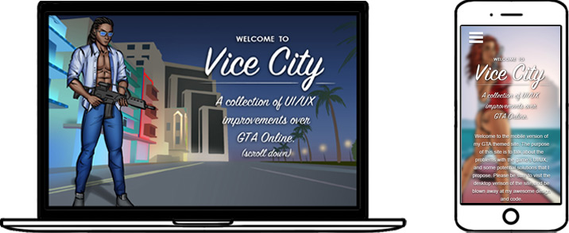
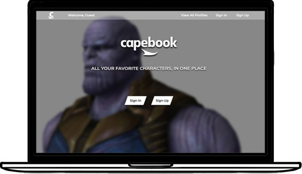
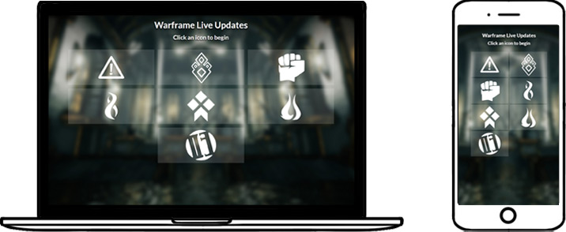

MATINY LOUIS
ARTIST | DEVELOPER | THINKER
ABOUT ME
Web Development is mainly about problem solving and creativity. For most of my life, I've been a big fan of both. It took me many years to realize this, though. In the meantime, I've been a math tournament champion, lover of strategy in games, and an artist. I've always been intrigued by the nitty gritty of the creative process and basic life hacks. Computer science is not only a broad outlet for the aforementioned, but a profitable one.
Tools I Use
SAMPLE APPS
GTA UI/UX Concepts
(React, Sass, UI/UX Design, Responsive Design)
GTA Online is very detailed, but the details are presented in a confusing way. This app is a series of 6 smaller interactive apps of concepts that improve upon the game’s UI/UX design flaws. One of the design problems addressed is the cluttered menus. I came up with various menus which are simpler to use, while maintaining the same complex functions.
Capebook
(React, Redux, Sass, JWT, Node, Express, MongoDB)
This is a full stack social media app inspired loosely by Facebook, with a very different design aesthetic. It features an API that allows user creation/login, posts, commenting, error checking, profile customization via a dashboard, etc.
Warframe Live Updates
(React, Sass, Responsive Design, AJAX)
Warframe is an online game which has quite a few special missions going on at once. This app tracks those missions by making a get request every minute, and syncs with the in-game events in real time. This app also uses CSS grid and Html Canvas.